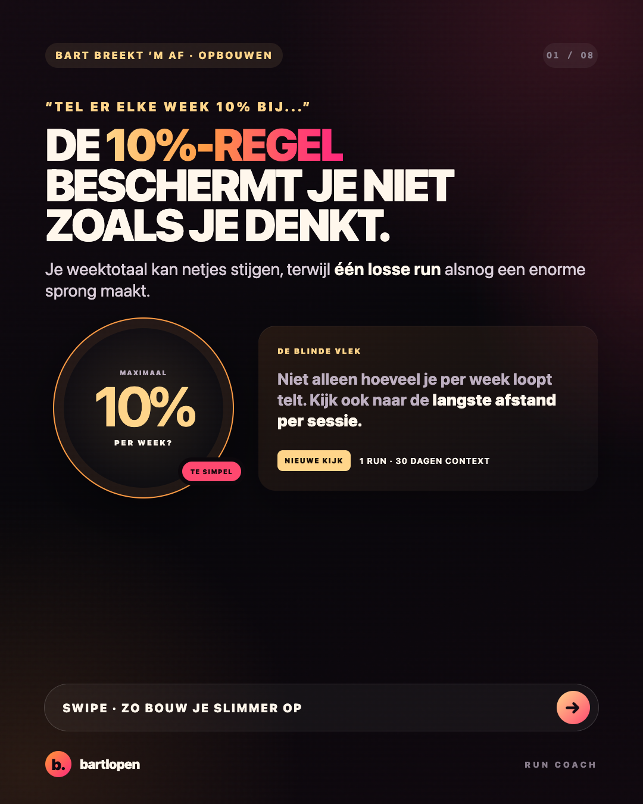
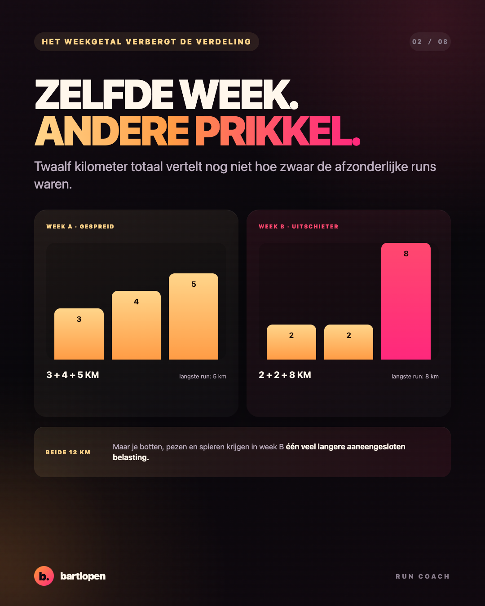
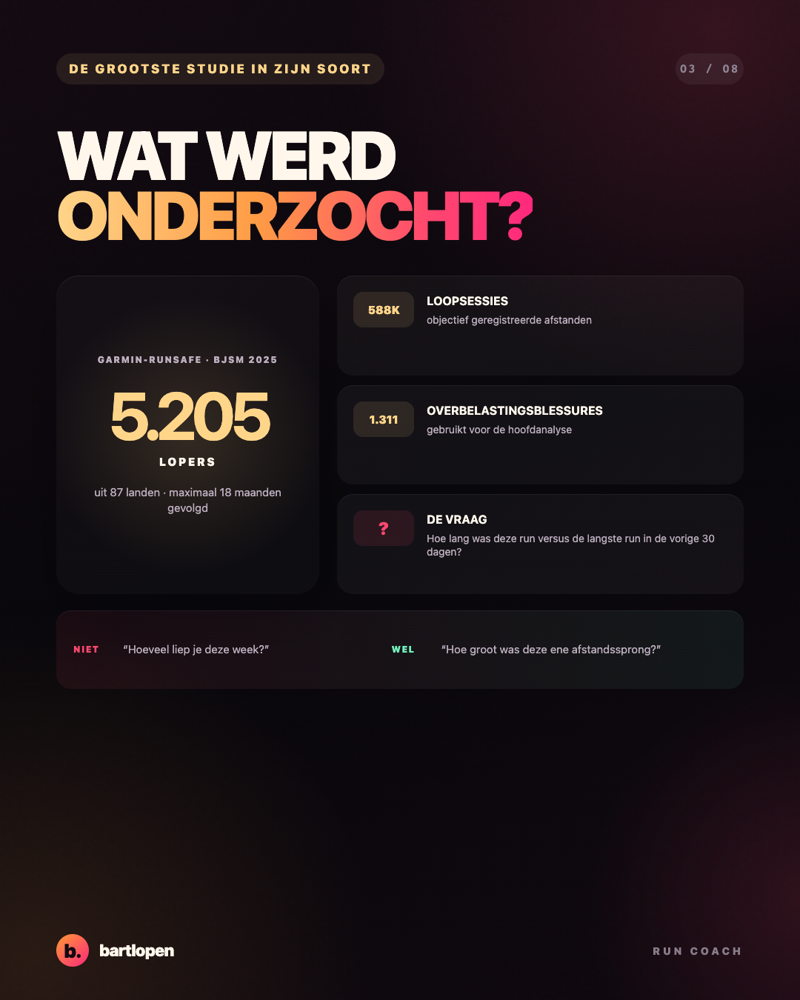
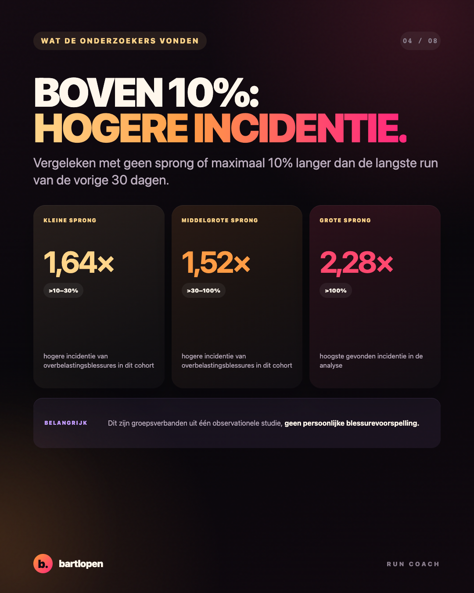
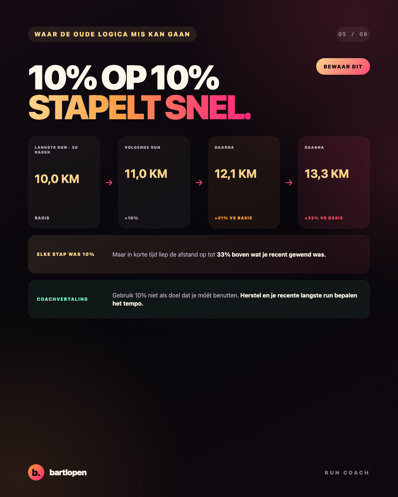
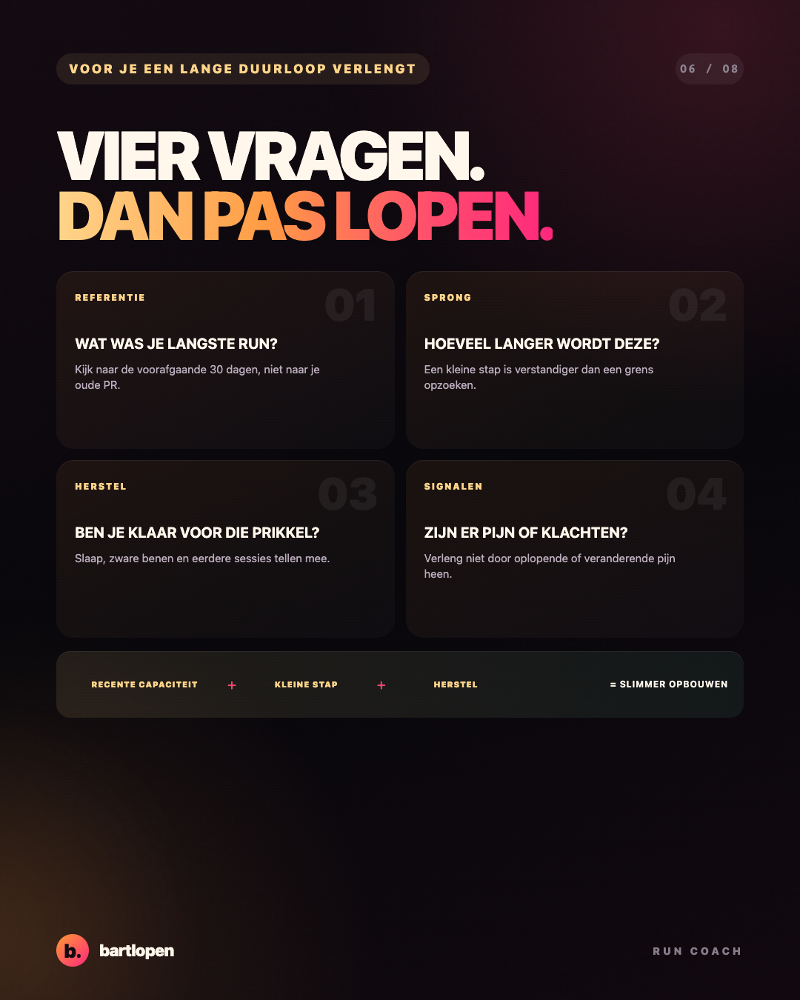
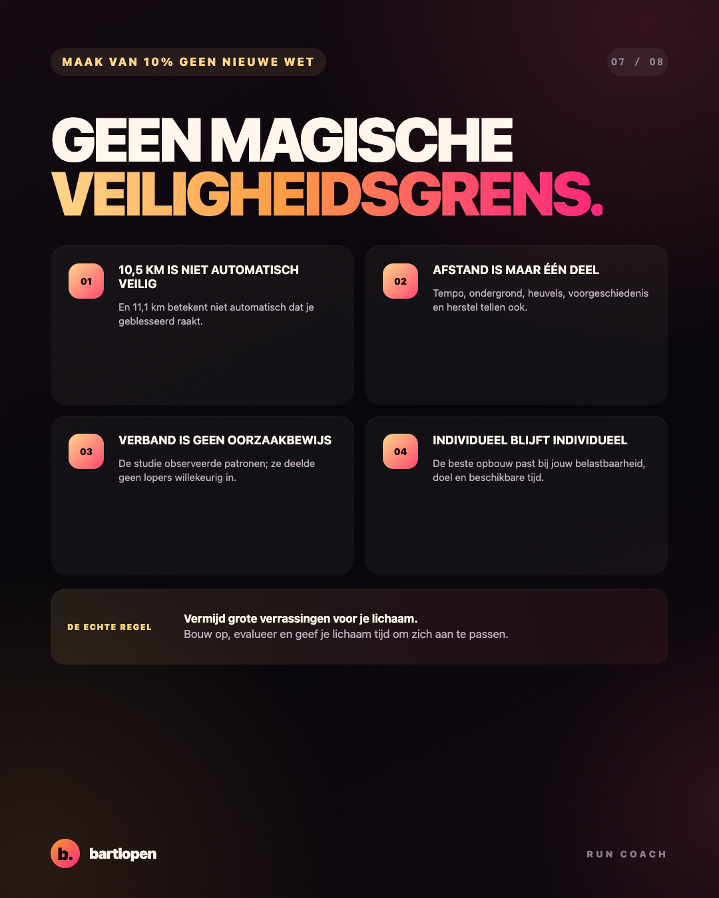
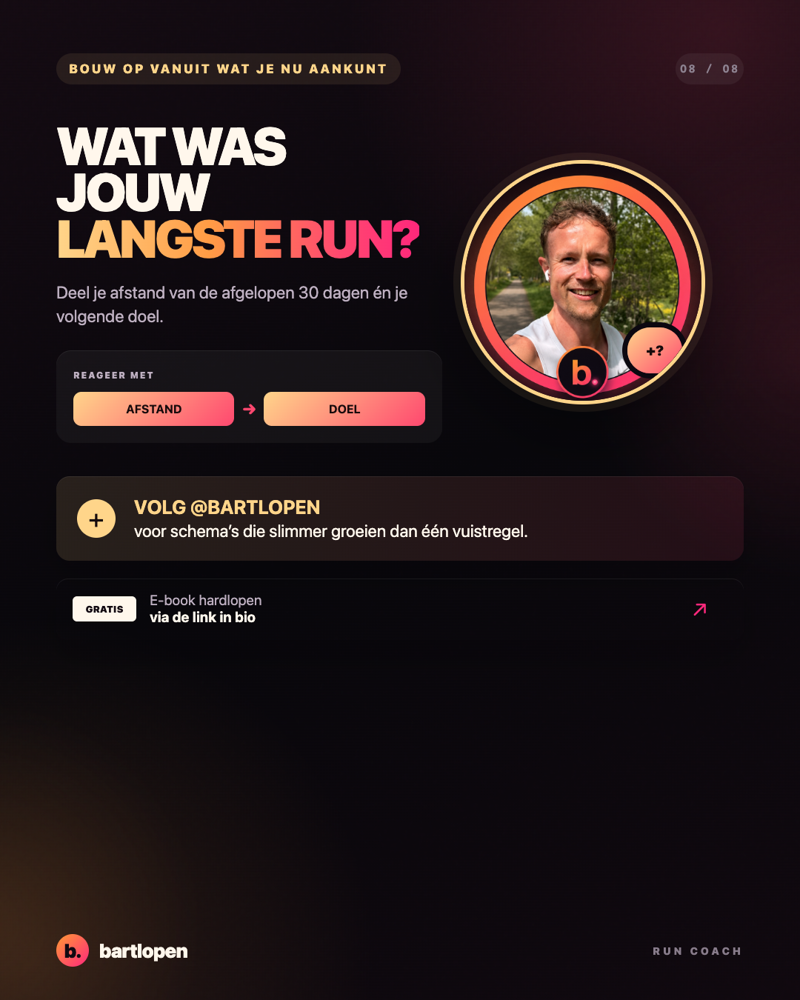

SLIDE 01 ↗De 10%-regel
te simpel?
Acht premium slides over weektotalen, uitschieters binnen één loopsessie en slimmer opbouwen. Gebouwd in 4:5-formaat voor Instagram en TikTok Photo Mode.

SLIDE 02 ↗
SLIDE 03 ↗
SLIDE 04 ↗
SLIDE 05 ↗
SLIDE 06 ↗
SLIDE 07 ↗
SLIDE 08 ↗Caption
DE 10%-REGEL IS GEEN VEILIGHEIDSGARANTIE. 📈 “Verhoog je kilometers iedere week met maximaal 10%.” Klinkt overzichtelijk. Maar alleen naar je weektotaal kijken mist iets belangrijks: hoe groot is de afstandssprong binnen één losse training? Een grote studie onder 5.205 lopers vond een hogere incidentie van overbelastingsblessures wanneer één run meer dan 10% langer was dan de langste run uit de voorafgaande 30 dagen. Dat betekent niet: ❌ 10% is altijd veilig ❌ 11% veroorzaakt automatisch een blessure Het betekent wel: ✅ kijk naar je langste recente run ✅ voorkom grote verrassingen in één sessie ✅ neem slaap, herstel, tempo, ondergrond en klachten mee ✅ gebruik een vuistregel nooit als blind doel Wat was jouw langste run van de afgelopen 30 dagen, en waar bouw je naartoe? 👇 #hardlopen #hardlooptips #longrun #blessurepreventie #marathontraining #bartlopen
Bron: “How much running is too much? Identifying high-risk running sessions in a 5200-person cohort study”, British Journal of Sports Medicine (2025). De resultaten tonen verbanden op groepsniveau en zijn geen persoonlijke blessurevoorspelling.